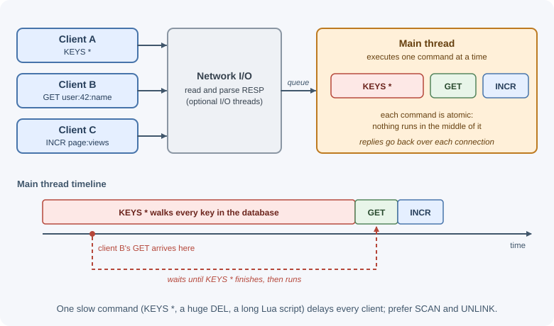
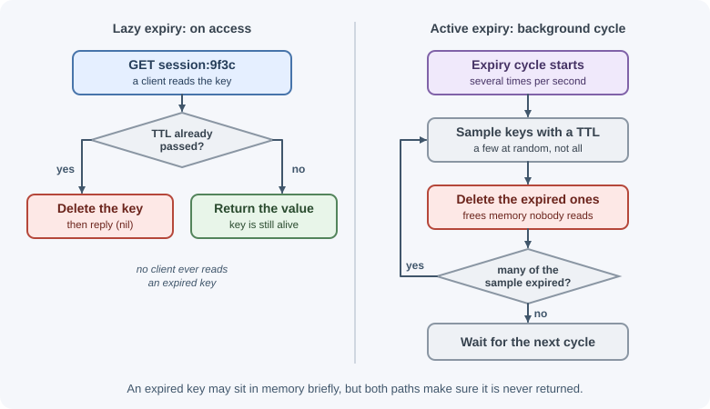

Redis Fundamentals¶
Redis is an in-memory data structure server: a separate process that holds data in RAM and lets clients read and change it with simple commands over a network connection. Its values are not just strings but lists, hashes, sets, sorted sets, streams, and more, each with commands designed for it. Backends use Redis for caching, sessions, counters, rate limits, queues, and real-time features.
Why it matters¶
A typical database query reads from disk, parses SQL or a query document, and may take several milliseconds. A Redis command usually completes in well under a millisecond on the server. When the same data is read thousands of times per second, or when several application instances need to share fast, temporary state, Redis removes load from the primary database and keeps response times low.
Redis is also easy to misuse: it is limited by memory, it is not durable by default in every configuration, and one slow command can stall every client. Understanding how it works is the basis for the other Redis lessons.
Real-world usage¶
- GitLab uses Redis for many separate jobs at once. Its development guide lists caching, the Sidekiq job queue, shared application state, CI trace chunks, a Pub/Sub backend for ActionCable, rate-limiting state, and sessions, and notes that GitLab.com runs separate Redis instances rather than one shared server (GitLab: Redis guidelines). One fast, shared store serves many features; splitting instances keeps a busy cache from hurting queues and sessions.
- Mastodon backs home feeds, list feeds, Sidekiq queues, and its streaming API with Redis, and also uses it for volatile caching. Its scaling guide recommends a separate Redis for the cache, because the other data is important to keep (Mastodon: Scaling up your server).
- Stripe implements its API rate limiters with Redis and keeps a Redis cluster that counts in-flight requests for load shedding (Stripe: Scaling your API with rate limiters). Every API server needs the same counters at sub-millisecond speed, which a shared in-memory store provides.
Popular tools and providers:
- Redis Open Source and Valkey, a BSD-licensed fork backed by the Linux Foundation.
- Amazon ElastiCache, which runs Valkey, Memcached, and Redis OSS engines.
- Google Cloud Memorystore for Redis and Azure Managed Redis (Microsoft is retiring Azure Cache for Redis in its favor).
How it works¶
The client-server model¶
+--------------+ TCP (port 6379) +--------------------+
| App instance | --- SET user:42:name Ada -->| |
| (Node.js) | <-------- OK --------------| Redis server |
+--------------+ | |
+--------------+ | keys -> values |
| App instance | --- GET user:42:name ------>| held in memory |
| (Node.js) | <-------- "Ada" -----------| |
+--------------+ +--------------------+
Redis is a key-value store at its core. Every piece of data lives under
a key (a string), and the value has a type: string, list, hash, set,
sorted set, stream, and others covered in
data structures. Each type has its own commands, and
using the wrong command on a key returns a WRONGTYPE error.
Why Redis is fast¶
- Data lives in memory. Reads and writes do not wait for disk.
- Commands run one at a time. A single main thread executes commands sequentially. There are no locks between commands, and every individual command is atomic: no other command runs in the middle of it.
- I/O can use extra threads. Since Redis 6, optional I/O threads can read and write network data in parallel, while command execution stays on the main thread. Background threads also handle work such as freeing large values and syncing files to disk.
- Compact encodings. Small lists, hashes, sets, and sorted sets are stored in memory-efficient formats and switch to larger structures only when they grow.
- Simple protocol. The wire protocol is cheap to parse.
The flip side of single-threaded execution: a slow command blocks all
clients. KEYS * on millions of keys, deleting a huge value with DEL, or
a long Lua script freezes the server until it finishes. Prefer SCAN to
KEYS, UNLINK (asynchronous delete) to DEL for big values, and keep
scripts short.

Keys and naming conventions¶
Keys are binary-safe strings (up to 512 MB, though they should be short). Redis has no tables or folders, so teams invent structure with a naming convention, usually segments separated by colons:
| Key | Meaning |
|---|---|
user:42 |
Hash with user 42's profile |
user:42:sessions |
Set of session IDs for user 42 |
session:9f3c... |
One session's data |
cache:v2:product:17 |
Cached product, cache format version 2 |
rate:login:203.0.113.5 |
Login attempt counter for one IP |
Good keys are readable, predictable, include the object type and ID, and can include a version so a cache format change does not read old data.
Redis also has numbered logical databases (0–15 by default, chosen with
SELECT), but Redis Cluster supports only database 0. Separate instances or
key prefixes are the more common way to isolate data.
Expiration (TTL)¶
Any key can have a time to live. When it expires, Redis deletes it.
| Command | Effect |
|---|---|
SET key value EX 60 |
Set a value that expires in 60 seconds (PX for milliseconds) |
EXPIRE key 60 |
Add or change a TTL on an existing key |
EXPIREAT key 1767225600 |
Expire at a Unix timestamp |
TTL key |
Seconds left: -1 means no expiry, -2 means the key does not exist |
PTTL key |
Milliseconds left |
PERSIST key |
Remove the TTL |
Commands that replace a value (such as SET without KEEPTTL) clear the
TTL. Commands that modify a value in place (such as INCR, LPUSH, or
HSET) keep it.
Redis removes expired keys in two ways:
- Lazy (passive) expiry: when a client accesses a key, Redis checks whether it has expired and deletes it before answering.
- Active expiry: a background cycle repeatedly samples keys that have a TTL and deletes the expired ones, so keys nobody reads still disappear.
Because active expiry samples rather than scanning everything, an expired key may occupy memory briefly, but no client will ever read it.

redis-cli basics¶
redis-cli is the command-line client. Run it with no arguments to connect
to localhost:6379, or pass -h, -p, and -a/--user, or a URL with
-u.
$ redis-cli
127.0.0.1:6379> PING
PONG
127.0.0.1:6379> SET greeting "hello" EX 60
OK
127.0.0.1:6379> GET greeting
"hello"
127.0.0.1:6379> TTL greeting
(integer) 57
127.0.0.1:6379> TYPE greeting
string
127.0.0.1:6379> EXISTS greeting missing
(integer) 1
127.0.0.1:6379> DEL greeting
(integer) 1
127.0.0.1:6379> GET greeting
(nil)
Useful commands while learning: SCAN 0 MATCH user:* COUNT 100 to list keys
safely, INFO for server statistics, MONITOR to watch every command (only
on a development server, because it slows Redis), and --latency to measure
round-trip time.
RESP, the wire protocol¶
Clients talk to Redis with RESP (REdis Serialization Protocol), a simple
text-prefixed format. SET key value is sent as an array of bulk strings:
*3\r\n$3\r\nSET\r\n$3\r\nkey\r\n$5\r\nvalue\r\n
and the reply +OK\r\n is a simple string. RESP3, introduced in Redis 6
and selected with the HELLO 3 command, adds richer types such as maps,
doubles, and out-of-band push messages. Client libraries handle the protocol
for you; knowing it exists explains why pipelining many commands is cheap.
Running Redis locally¶
The quickest way is the official Docker image:
$ docker run -d --name redis -p 6379:6379 redis
$ docker exec -it redis redis-cli PING
PONG
See Docker. Never expose port 6379 to the internet: require authentication (passwords or ACL users), use TLS for connections across networks, and keep Redis on a private network.
Connecting from Node.js¶
The examples in these Redis lessons use the official node-redis client
(redis on npm). Its methods mirror Redis commands in camelCase: GET is
get, HSET is hSet, ZADD is zAdd. Option names occasionally change
between major versions of the client, so check its documentation for the
version you install.
Redis compared with Memcached¶
| Redis | Memcached | |
|---|---|---|
| Values | Many data types with server-side operations | Strings (bytes) only |
| Persistence | Optional (RDB snapshots, AOF log) | None |
| Replication and failover | Built in (replicas, Sentinel, Cluster) | Not built in |
| Threading | Single-threaded command execution, optional I/O threads | Multi-threaded |
| Extra features | Pub/Sub, streams, Lua scripts, transactions | Minimal by design |
| Typical use | Cache plus shared state, counters, queues | Simple, very large caches |
Memcached remains a good, simple cache; Redis is chosen when you need data types, persistence, replication, or the other features.
Redis, its license, and Valkey¶
Redis was open source under the BSD license for most of its history. In 2024, Redis Ltd. moved new versions (starting with 7.4) to source-available licenses (RSALv2 and SSPLv1). In response, the Linux Foundation started Valkey, a BSD-licensed fork of the last open-source Redis code (the 7.2 line), which stays command-compatible with Redis for the features they share. Redis 8 (May 2025) later added the open-source AGPLv3 as a licensing option. For application code the commands in these lessons work on both; the choice matters mainly for companies that redistribute or host the server, and some managed services (for example Amazon ElastiCache) offer Valkey.
When to use and when not to use¶
Use Redis when:
- Several application instances must share fast, temporary state: sessions, counters, rate limits, locks, or feature flags.
- The same data is read far more often than it changes and can be rebuilt from a database (a cache).
- An operation maps onto a server-side data structure command: a leaderboard, a capped feed, a set of unique visitors, a work queue.
- The working data fits comfortably in RAM.
Avoid Redis, or use it only next to another store, when:
- It would be the only copy of business-critical records that need joins, ad-hoc queries, or multi-table transactions; use a primary database.
- The dataset is much larger than the memory you can afford.
- You need months of replayable events at high volume; a log-based broker such as Kafka fits better (see Pub/Sub and streams).
- One process could keep the data in memory itself, with no sharing needed.
| Need | In-process cache (Map) |
Memcached | Redis | Primary database |
|---|---|---|---|---|
| Shared across instances | No | Yes | Yes | Yes |
| Data types and server-side operations | Any JS value, local only | Strings only | Many types, atomic commands | Tables or documents, rich queries |
| Survives a restart | No | No | Optional (RDB/AOF) | Yes |
| Replication and failover | No | Not built in | Built in | Built in |
| Typical role | Hottest per-process data | Simple shared cache | Cache plus shared state | System of record |
Practical examples¶
Connect, set, and read with node-redis¶
import { createClient } from "redis";
const client = createClient({ url: process.env.REDIS_URL }); // redis://host:6379
client.on("error", (err) => console.error("Redis client error", err));
await client.connect();
await client.set("greeting", "hello", { EX: 60 }); // SET greeting hello EX 60
console.log(await client.get("greeting")); // "hello"
console.log(await client.ttl("greeting")); // e.g. 60
console.log(await client.get("missing")); // null
await client.close(); // waits for pending commands, then disconnects
close() is the node-redis v5+ name; older v4 code calls quit(), which
still works but is deprecated. destroy() drops the connection immediately.
Always attach an error listener: without it, a connection error is an
unhandled event that can crash the process. node-redis reconnects
automatically after network failures.
One shared client per process¶
// redis.js: create the client once and import it everywhere.
import { createClient } from "redis";
export const redis = createClient({ url: process.env.REDIS_URL });
redis.on("error", (err) => console.error("Redis error", err));
await redis.connect();
Creating a client per request opens a new TCP connection each time and quickly exhausts the server's connection limit.
Expiry in action¶
127.0.0.1:6379> SET otp:42 "839201" EX 300
OK
127.0.0.1:6379> TTL otp:42
(integer) 296
127.0.0.1:6379> PERSIST otp:42
(integer) 1
127.0.0.1:6379> TTL otp:42
(integer) -1
127.0.0.1:6379> EXPIRE otp:42 5
(integer) 1
127.0.0.1:6379> GET otp:42 # six seconds later
(nil)
Iterating keys safely with SCAN¶
127.0.0.1:6379> SCAN 0 MATCH user:* COUNT 100
1) "1792" <- cursor for the next call; "0" means finished
2) 1) "user:42"
2) "user:7"
SCAN returns a page of keys and a cursor. Repeat with the returned cursor
until it is 0. It may return a key more than once, so treat results as a
set.
Best practices¶
- Use a consistent key naming scheme with an object type, ID, and optional version.
- Give temporary data a TTL; unbounded keys eventually fill memory.
- Avoid
KEYS,FLUSHALL, and other blocking or destructive commands in production; block them for application users with ACL rules (for example-@dangerous). - Keep values small; split very large hashes, lists, or sets.
- Create one client per process and reuse it; handle
errorevents. - Require authentication, use TLS across networks, and never expose Redis publicly.
- Set
maxmemoryand an eviction policy appropriate to the workload (see using Redis as a cache). - Decide explicitly whether the data must survive restarts (see persistence and high availability).
In production¶
Latency spikes and client timeouts.
- Detect:
SLOWLOG GET 10lists the slowest recent commands; enable the latency monitor withCONFIG SET latency-monitor-threshold 100and readLATENCY LATESTorLATENCY DOCTOR. - Cause: one slow command blocks every client:
KEYS *,DELof a huge value,HGETALLorSMEMBERSon a collection with millions of members, or a long Lua script. - Fix: use
SCANandUNLINK, split big keys, fetch only the fields you need, and keep scripts short.
Writes fail or cached data vanishes when memory fills.
- Detect:
INFO memoryshowsused_memoryreachingmaxmemory;INFO statsshowsevicted_keysrising. Withnoeviction, write commands start returning out-of-memory errors while reads still work. - Cause: keys without TTLs, big keys, or a backlog that grows faster than it drains. Slack's Redis job queue had an outage when Redis reached its memory limit and workers could no longer dequeue (Slack engineering).
- Fix: add TTLs, choose an eviction policy that fits the data, alert on memory well before the limit, and keep caches and queues on separate instances.
New connections are refused.
- Detect:
INFO clientsshowsconnected_clientsnearmaxclients(10,000 by default);INFO statsshowsrejected_connectionsincreasing. - Cause: a client created per request, or connections that are never closed.
- Fix: create one client per process and reuse it, and close it on shutdown.
The server becomes very slow or is killed by the operating system.
- Detect: the
Swaplines in/proc/<pid>/smapsfor the Redis process are non-zero (the check the Redis latency guide recommends);used_memory_rsssmaller thanused_memory(amem_fragmentation_ratiobelow 1) is another hint; system logs show the process was killed for memory. - Cause:
maxmemoryunset or set too close to the machine's RAM, with no headroom for snapshots, replication buffers, and client buffers. - Fix: set
maxmemorywell below physical RAM and monitor memory at the host level too.
Important terminology¶
- In-memory data store: A database that keeps its working data in RAM.
- Key: The name under which a value is stored.
- Data type: The structure of a value (string, hash, list, set, and so on).
- TTL: Time to live: how long until a key expires.
- Atomic command: A command that runs completely without other commands interleaving.
- RESP: The Redis Serialization Protocol used between clients and server.
- redis-cli: The official command-line client.
- Valkey: A BSD-licensed, community fork of Redis maintained under the Linux Foundation.
Common mistakes and misconceptions¶
- "Redis is only a cache." It is also used for sessions, queues, leaderboards, locks, and streams.
- "In-memory means my data is never lost" or "always lost." Durability depends on persistence and replication settings.
- "Single-threaded means slow." Sequential execution in memory is very fast; the risk is slow commands blocking others.
- Using
KEYS *in production. It scans every key and blocks the server. - Forgetting TTLs. Memory fills, and eviction or errors follow.
- Overwriting a key and expecting the TTL to stay.
SETclears it unlessKEEPTTLis used. - Opening a connection per request. This wastes time and connections.
Revision questions¶
- What makes Redis fast, and what is the main risk of its single-threaded command execution?
- How do lazy and active expiry work together?
- Which commands keep a key's TTL and which clear it?
- Why is
SCANpreferred overKEYSin production? - How does Redis differ from Memcached?
- Why should an application create one Redis client per process?